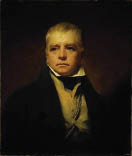

(1771 – 1832)

"Rob Roy" ve "Ivanhoe" gibi romanlarıyla roman sanatına kahramanlık hikayelerini sokan Sir Walter Scott binlerce kopya satan şiir kitapları ve romanları ile 19. yüzyılın en tanınan yazarlarından. İskoç milliyetçiliğinin de önemli adlarından biri olan yazara belki de bu nedenle Britanya Kralı onu biraz dizginlemek adına "Sir" unvanı vermişti.
Walter Scott (okunuşu: Voltır Skat), 15 Ağustos 1771 tarihinde Anne Rutherford ve Walter Scott'ın dokuzuncu çocuğu olarak İskoçya'nın başkenti Edinburgh'da dünyaya geldi. İki yaşında geçirdiği çocuk felci dolayısıyla hayatı boyunca sağ ayağı topal kalan yazar, o yaşlarını daha çok büyükbabası Robert Scott'ın çiftliğinde geçirdi. 1775 yılında Bath kaplıcalarına götürülen Scott 1779 yılında High School of Edinburgh'da okul hayatına başladı. 1783-86 yılları arasında Edinburgh Üniversitesi'nde okuyan yazar, hastalığının nüksetmesi üzerine öğrenimine ara verdi ve bir süreliğine halası Janet Scott'ın yanına gönderildi.
1786'da babasının hukuk firmasında avukat yardımcılığına başlayan Scott, 1789-92 yılları arasında Edinburgh Üniversitesi'nde hukuk öğrenimi gördükten sonra 1796 yılına kadar Edinburgh'da avukatlık yaptı. 1797'de Charlotte Carpentier ile evlendi ve bu evliliğinden iki kızı, iki oğlu oldu. 1809 yılında arkadaşı John Ballantyne'in yayın şirketine ortak oldu. İlk romanı Waverley 1814'te imzasız olarak yayımlandı. İmzasız olmasına rağmen roman İngilizcede yayımlanan romanlar arasında tarihte en çok satan kitaplardan biri oldu. Guy Mannering ve Waterloo'ya yaptığı yolculuğun eseri olan ikinci romanı Waterloo Meydanı, 1815'te yayımlandı. Bir yandan şiirler ve romanlar yazmayı sürdüren Walter Scott, çok sonraları filme de çekilecek olan Rob Roy adlı romanını 1817'de yayımladı. Ertesi yıl Britanica Ansiklopedisi için şövalyelikle ilgili bazı maddeler kaleme alan yazar, o yıl aynı zamanda kendisine verilen "baronet"lik unvanını kabul etti ve "Sir Walter Scott" oldu. 1819 yılının sonuna doğru ise yazarın başyapıtı olan Ivanhoe romanı yayımlandı ve iki haftada 10.000 satarak bugün için bile büyük olan bir başarıya imza attı. 1820'li yıllar boyunca Manastır (1820), Korsan (1821), Tılsım (1824), Napolyon'un Hayatı (1827) gibi romanlar yayımlayan Scott, 1831'de son romanı Tehlikeli Kale'yi yayımladı.
Şiirleri ve romanlarıyla büyük kitlelere ulaşan ilk şair ve yazarlardan biri olan Walter Scott, 1831 yılında felç geçirdikten sonra çok sevdiği on yaşındaki torunu Johnnie Lockhart'ın ölüm haberiyle yıkıldı. Tedavi amacıyla İtalya'ya giden ama umduğunu bulamayan Scott İskoçya'ya döndükten sonra, 21 Eylül 1832'de Abbotsford'da öldü ve Dryburgh Abbey'de eşinin yanına gömüldü.
Seçme Romanları: Guy Mannering (1815), Rob Roy (1817), Ivanhoe (1819 – Korkusuz Şövalye Ivanhoe, Can Yayınları, 2004), The Pirate (1821), Tales of the Crusaders (1825), Selahaddin-i Eyyubî ve Arslan Yürekli Rişar (Ötüken Neşriyat, 2012), Woodstock (1826)